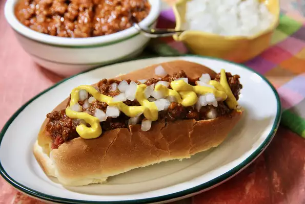

This regional specialty has a unique sauce which is typically slightly chunkier
and thicker than most hot dog sauces. You'll often find this served on top-split buns,
but regular hot dog buns will work. There are many versions of this sauce, but this is
the way we like ours.
- Prep: 15min
- Cook: 15min
- Total: 30min
- Servings: 10
- Yields: 10 hot dogs
Ingredients
- 1 pound ground beef
- ⅔ cup finely chopped onion, divided
- 1 (15 ounce) can tomato sauce
- ⅓ cup ketchup
- 2 tablespoons chili powder
- 1 tablespoon cider vinegar
- 1 tablespoon garlic powder
- 1 teaspoon hot sauce (such as Frank's® RedHot®)
- salt and freshly ground black pepper to taste
- 1 tablespoon water, or as needed
- 10 hot dog buns
- 10 all beef hot dogs
- 5 teaspoons prepared yellow mustard
Steps
- Brown ground beef and 1/3 cup onion in a large skillet
over medium heat, until the meat is no longer pink, 5 to 7
minutes. Drain, and return the skillet to the stove.
- Stir tomato sauce and ketchup into the ground beef mixture.
Add chili powder, vinegar, garlic powder, hot sauce, salt,
and pepper; stir until well combined. Reduce heat to low and
simmer uncovered until sauce has thickened, 8 to 10 minutes.
If sauce gets too thick, add water to thin it out.
- Meanwhile steam or simmer hot dogs in hot water until hot.
- Assemble hot dogs: Place a hot dog in a bun and spoon 2 to 3
tablespoons sauce on top. Sprinkle with remaining onions and
drizzle with yellow mustard.
Back to the top